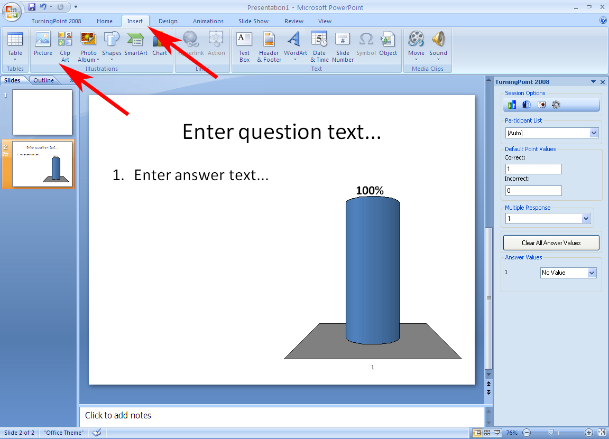
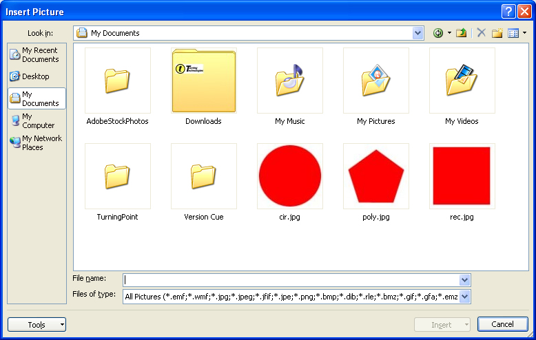
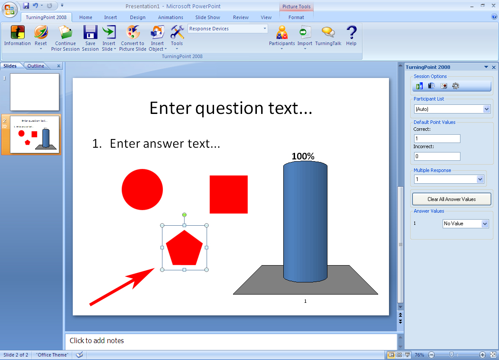
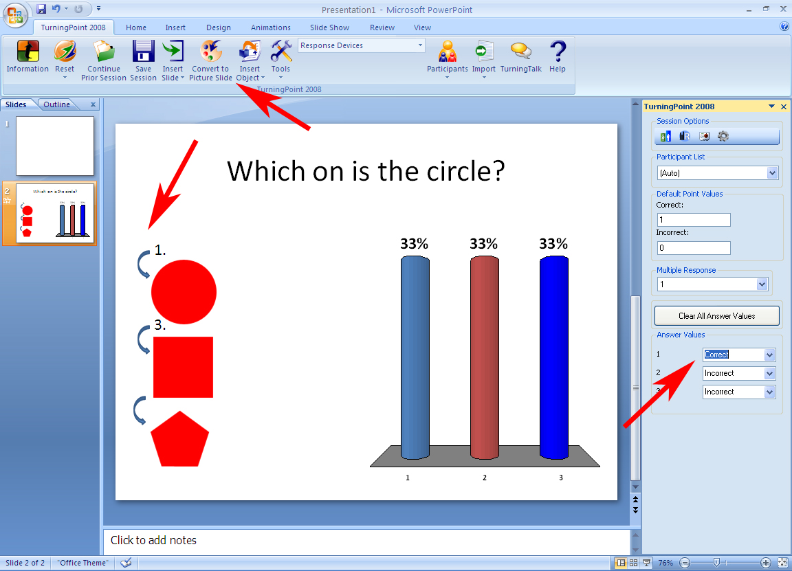

Using pictures as answer choices (Picture Slides):
TurningPoint allows the user to insert pictures and use them for answer choices. Be sure that you have permission from the copy write owner to use any images you include in you presentation.
- Create a standard TurningPoint slide.
- Enter your question data in the question field. From the PowerPoint Insert tab click on “Picture”.

- Navigate to the location where you images are stored, select them and click “Insert”. Your images are now inserted into your presentation.

- You can use click on the images to move and resize them as needed.

- In the TurningPoint ribbon, click on “Convert to Picture Slide”. TurningPoint will assign answers labels to the pictures and you will be able to assign an answer value to the correct and incorrect images.
